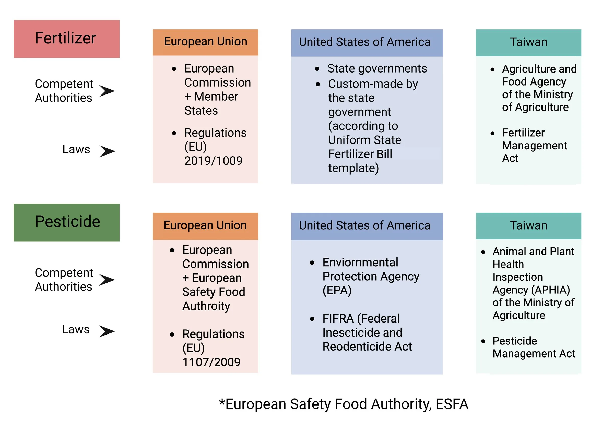
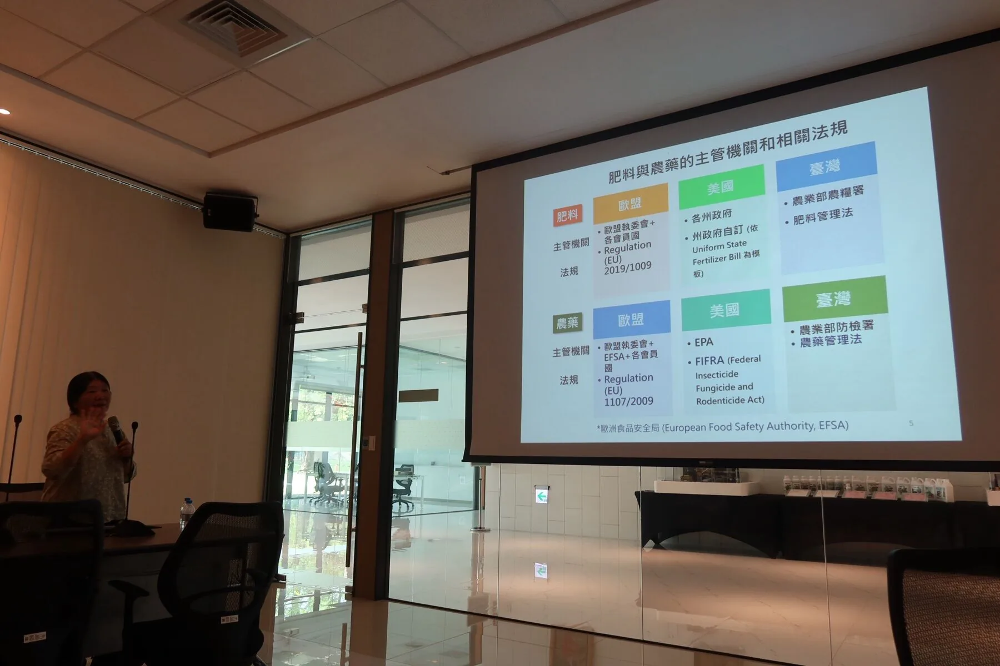
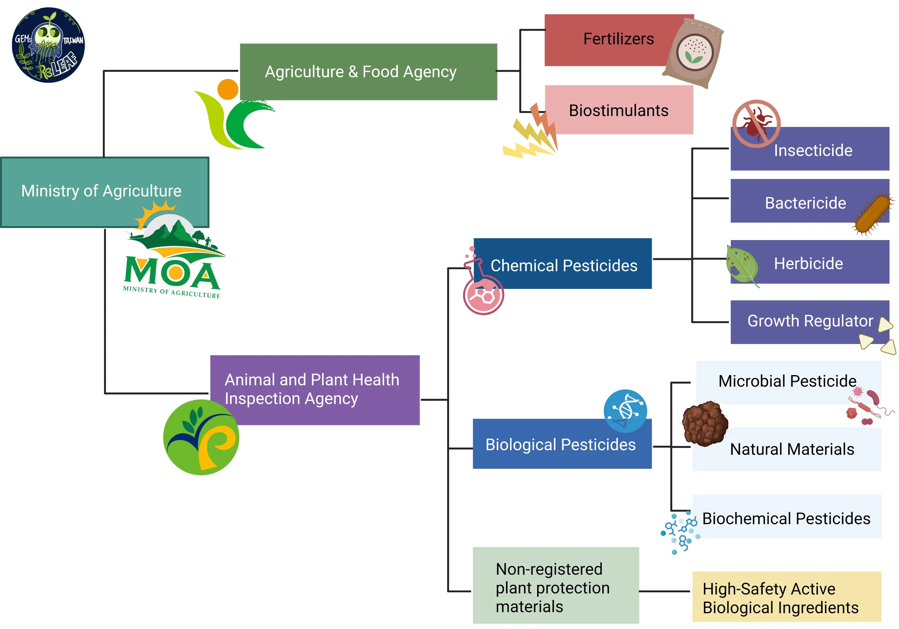
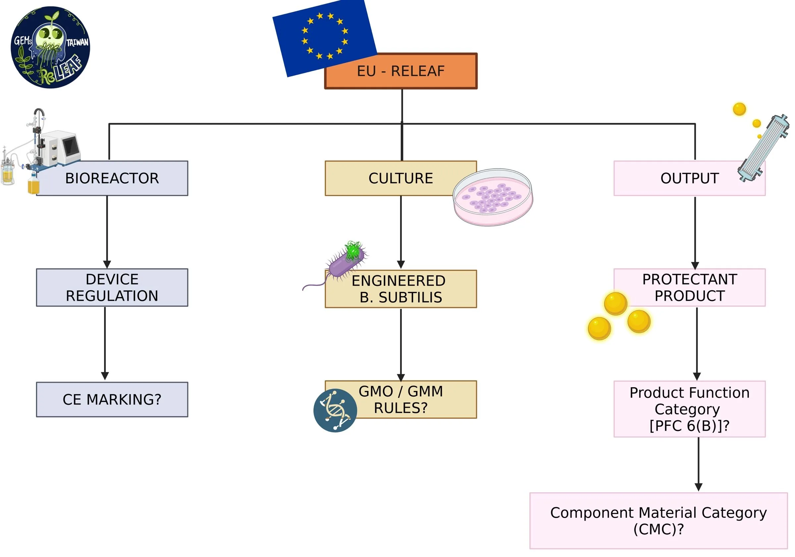
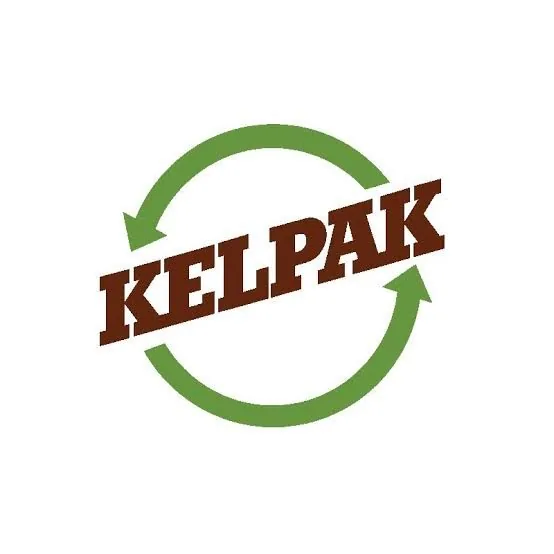

ReLEAF’s regulatory strategy separates the bioreactor, engineered Bacillus subtilis culture, and cell-free agricultural output into distinct regulatory assessments.
ReLEAF’s primary commercialization strategy investigates plant-biostimulant pathways for abiotic-stress resilience. Separately, after Jamboree, we plan to investigate whether BoPep4 can control gray mold (Botrytis cinerea) and what pesticide/fungicide classification would apply in Taiwan. These remain distinct regulatory pathways, and neither potential pathway constitutes approval. Taiwan will serve as our development market, followed by the Philippines and Thailand, while the EU remains a longer-term opportunity. Before commercialization, we must validate containment, test for viable production organisms and residual recombinant DNA, demonstrate product safety and efficacy, and consult relevant authorities.
ReLEAF's regulatory review identifies three separate questions: how the agricultural output is classified, how the engineered production culture is contained, and which requirements apply to the bioreactor. The most important finding is that a potential regulatory pathway is not an approval. A fertilizer or plant-biostimulant route is being investigated for ReLEAF's cell-free output, while the classification of the engineered Bacillus subtilis culture and the final equipment requirements remain separate questions. For post-Jamboree development, BoPep4 will also be investigated as a potential gray-mold-control product in Taiwan. This use may trigger a microbial fertilizer/fungicide pathway distinct from the fertilizer or plant-biostimulant route.
Our analysis covers Taiwan, the European Union, the United States, and potential Southeast Asian markets. Taiwan is our development and validation environment. Our current commercialization plan prioritizes the Philippines as the first international expansion market, with the European Union considered for a later stage.
The review draws on primary legal sources and an industry briefing from Cheng Han Biotechnology (正瀚生技). It also identifies unresolved questions concerning product composition, residual cells and DNA, efficacy evidence, and applicable contained-use requirements. These gaps are treated as development tasks, not as evidence of regulatory compliance. Regulation is therefore not the final checkpoint of ReLEAF – it is one of the constraints that shape what we build, what we claim, and where we sell it.
Regulation as Product Design
Showcase of Overlapping Regulatory Themes Across the European Union, Taiwan, and the United States of America (Abiotic Pathway).

Cheng Han Biotechnology’s Break Down of Different Global Market’s Legal Authorities.
ReLEAF is a three-part system: the bioreactor, the engineered production culture, and the cell-free agricultural output. We examined these components across Taiwan, the European Union, the United States, and potential Southeast Asian markets. The same biological output may be treated differently depending on its composition, intended function, claims, and jurisdiction. We therefore treated regulation as part of product design rather than a final approval step.
Our regulatory analysis follows:
Function → Claim → Classification → Requirement → Market Access
Table 1. Three Principles Shaped Our Development:
Principle
Implications for ReLEAF
I - Regulation shapes design
Formulation, function, and claims influence the regulatory pathway
II - Separate the system
The bioreactor, engineered B. subtilis, and cell-free output raise different regulatory questions
III - Claims shape markets
Abiotic-stress claims support investigation of fertilizer/plant-biostimulant pathways; pathogen-control claims may trigger a separate pesticide or plant-protection-product pathway.

Regulatory briefing by 袁秋英 (Yuan Chiu-Ying), Researcher at CH Biotech (正瀚生技), 9 July 2026: the competent authorities and governing laws for fertilizers and pesticides in the EU, US and Taiwan.
Organic Farming Compatibility
ReLEAF's organic-farming compatibility depends not only on whether viable engineered Bacillus subtilis cells enter the agricultural environment, but also on whether each country's organic standards permit agricultural inputs manufactured using genetically engineered organisms. Although ReLEAF's bioreactor is designed to retain the production bacteria behind a 0.2 µm hollow-fiber membrane and deliver cell-free protective proteins and peptides, this containment design does not automatically establish organic eligibility. The following assessment follows ReLEAF's planned market-entry sequence.
1. Taiwan: Initial regulatory assessment
Taiwan's Organic Agriculture Promotion Act explicitly defines organic agriculture as production that does not use genetically modified organisms or their products. Article 15 of the Act further emphasizes the restrictions prohibiting substances outside the officially permitted list. Consequently, ReLEAF's use of engineered B. subtilis creates a potential compatibility barrier even if the final formulation contains no viable production cells. Before targeting certified organic farms, ReLEAF should seek clarification from the Ministry of Agriculture and an accredited organic certification body on whether the protective proteins are considered products derived from or produced by a GMO and whether the specific formulation can qualify as an authorized input. Conventional agricultural registration and organic eligibility must be evaluated separately (Agriculture and Food Agency–Ministry of Agriculture, AFA–MOA).
2. Philippines: First international assessment
The Philippines has an established organic agriculture framework under Republic Act No. 10068, as amended by Republic Act No. 11511, with national standards covering organic crop production and agricultural inputs. ReLEAF should consult the Bureau of Agriculture and Fisheries Standards (BAFS) and a recognized organic certification body to determine whether the cell-free formulation is permitted under the applicable Philippine National Standards. The review should distinguish the intended use of the product for abiotic-stress tolerance from microbial biocontrol applications and examine whether the engineered manufacturing process affects eligibility. Until the relevant provisions and input requirements have been confirmed, ReLEAF should classify organic compatibility in the Philippines as unresolved rather than assume that cell-free delivery qualifies for organic use (Bureau of Agriculture and Fisheries Standards, BAFS).
3. Thailand: Regional expansion assessment
Thailand's agricultural organic standard, TAS 9000-2564, covers organic production, processing, labelling and marketing. ReLEAF should assess the relevant crop-production and input requirements with the National Bureau of Agricultural Commodity and Food Standards (NBACFS) and an appropriate certification body. The central question is whether the protective formulation is permitted when its active proteins are produced by engineered bacteria, even if those bacteria are retained in the bioreactor. ReLEAF should also confirm whether the relevant certification scheme applies additional restrictions to GMO-derived agricultural inputs. Organic certification requirements should be distinguished from the separate authorization needed to market the product as a conventional agricultural input (Thai Agricultural Standard, TAS).
4. United States: Organic-method restrictions
The United States Department of Agriculture's National Organic Program (NOP, USDA) prohibits genetic engineering and other excluded methods in organic production. Its regulations also restrict the use of ingredients produced through excluded methods, while crop-production inputs must satisfy the applicable substance requirements. Consequently, ReLEAF faces a substantial potential barrier to use on USDA-certified organic farms: removing viable engineered bacteria from the final formulation would not, by itself, resolve the question of whether the active proteins were produced using a prohibited method. ReLEAF should obtain an assessment from a USDA-accredited organic certifier before considering an organic-use claim. Conventional product authorization would not establish USDA organic eligibility (United States Department of Agriculture, USDA).
5. Vietnam and Indonesia: Parallel assessments
Vietnam and Indonesia should be evaluated as separate regulatory markets, even though ReLEAF plans to investigate them during the same expansion phase.
In Vietnam, ReLEAF should assess the national organic agriculture framework, including Decree No. 109/2018/ND-CP and the applicable technical standards, such as, but not limited to: Decree No. 69/2010/ND-CP, Decree No. 84/2019/ND-CP (amended), Law on Plant Protection and Quarantine (2013), and Law on Product and Goods Quality (or Law No. 05/2007/QH12), with the competent authorities and appropriate certification body. The review should establish whether an agricultural input manufactured using engineered B. subtilis can be used in certified organic crop production when the final formulation is cell-free. The precise treatment of GMO-produced proteins must be confirmed before ReLEAF can classify the product as compatible.
In Indonesia, the assessment should follow the applicable National organic standard, including SNI 6729:2025, which revised the previous organic agriculture standard and will determine whether or not organic farmers can use ReLEAF to relieve their crop stress yet sell their harvest with the “ORGANIK Indonesia” label from the accredited Organic Certification Body (Lembaga Sertifikasi Organik). ReLEAF should confirm the relevant agricultural inputs. Particular attention should be given to whether the manufacturing process itself affects eligibility, rather than relying solely on analytical evidence that viable bacteria are absent from the output. Both markets should remain under regulatory assessment until written clarification is obtained (Government of Vietnam).
6. European Union: Strict restrictions on GMO-derived production
The European Union presents a significant challenge for ReLEAF's organic-market ambitions. Regulation (EU) 2018/848 explicitly excludes GMOs, products produced from GMOs and products produced by GMOs from organic production, subject to the regulation's stated exceptions. Because ReLEAF's protective proteins are manufactured using engineered B. subtilis, the product may fall within these restrictions even if the final formulation contains no viable cells. A demonstration of membrane integrity or the absence of detectable recombinant DNA would support the product's technical characterization but would not independently establish organic eligibility, which ReLEAF has the evidence detailed in Biomanufacturing page’s Regulations and Biosafety. ReLEAF should obtain a legal and certification assessment of the precise production process before considering the EU organic market. Conventional fertilizer or plant-biostimulant authorization would remain a separate requirement (Parliament and Council).
7. Malaysia: Final market assessment
Malaysia's myOrganic certification guidelines explicitly prohibit GMOs and their products in organic farming. This creates a potential compatibility barrier similar to those identified in Taiwan, the United States and the European Union. ReLEAF should consult the Department of Agriculture Malaysia and an appropriate certification body to determine whether its cell-free protective proteins are considered prohibited products of genetic engineering or could qualify under the applicable input requirements. The final assessment should consider the engineered production organism, manufacturing process, final formulation and intended agricultural use. ReLEAF should not advertise the product as suitable for certified organic farms until its eligibility has been confirmed (Department of Agriculture, DOA).
Overall strategy
ReLEAF should initially prioritize conventional agricultural applications while conducting organic-input assessments in parallel with its market expansion. Taiwan and the Philippines provide the first opportunities to obtain jurisdiction-specific guidance; Thailand, Vietnam and Indonesia can be assessed as the Southeast Asian strategy develops. The United States and European Union warrant early legal review because their organic standards explicitly restrict genetic engineering or products produced using GMOs. Malaysia should be assessed before regional commercialization is expanded there.
Across all markets, ReLEAF should maintain documentation of viable-cell retention, membrane integrity, residual genetic material, product composition and manufacturing controls. These data support biosafety and product-quality assessments, but they do not override organic standards that restrict the production method itself. Any claim of organic compatibility should therefore be made only after the relevant authority or certification body confirms that the specific formulation and manufacturing process satisfy the applicable requirements.
Three Components, Three Regulatory Questions
ReLEAF will not be entering the agricultural environment as an undifferentiated product; to our best knowledge, ReLEAF is the first team to create a system that delivers protectants to plants-in-stress on-site with a bioreactor, a strain of bacteria, and some proteins. The project is so nuanced that it’s great as a whole, but commencing it is a bit tangled and abstruse. Therefore, we decided to break down the project into three parts to register for commercialization instead of selling it as a bundle deal.
Table 2. Three Component Breakdown of ReLEAF’s Regulatory Approach
Component
Primary Question
ReLEAF’s Approach
Bioreactor
Does the equipment meet applicable safety and operating requirements?
Assesses pressure, electrical, fluid-contact, leak-prevention, cleanability, and other applicable equipment requirements
Engineered B. subtilis
How is the genetically engineered production organism contained?
Keeps the culture inside the production system, and separately assesses transport, storage and waste rules for genetically modified organisms and micro-organisms (GMOs and GMMs).
Cell-Free Output
How should the agricultural product be classified?
Evaluates composition, intended function, claims, efficacy, and the applicable fertilizer/biostimulant or pesticide/plant-protection pathway
The hollow-fiber membrane (0.2 µm) is designed to retain the production culture and let the soluble products through. Under Regulation (EU) 2019/1009, PFC 6(B) is the category for non-microbial plant biostimulants, and PFC 6 covers functions including improving plant tolerance to abiotic stress. However, our review has not identified a general numerical residual-DNA limit in the Regulation that can be stated as a PFC 6(B) requirement. ReLEAF should therefore not claim a legal DNA threshold unless a specific provision, applicable delegated act, harmonised standard, conformity-assessment requirement, or competent authority interpretation is identified. Independently of the legal threshold, ReLEAF will validate its cell-free output by testing for viable production organisms and residual recombinant DNA, report the methods and detection limits, and describe the hollow-fiber membrane as “designed to retain cells” until retention has been experimentally validated. In essence, containment is not only an engineering requirement; it determines the exposure pathway that regulators must consider, and separating the engineered production organism from the cell-free output lets regulators assess the two as distinct questions.
Function → Claim → Classification
Ask not “What molecule is this?” but “What is the product intended to do?” We call these three molecules biostimulants because of what they do in the plant. No authority has classified them, so the column below gives the category we are aiming at. Their intended functions are used to investigate whether a plant-biostimulant pathway could be appropriate for the final cell-free product. Because regulatory classification depends on the final formulation, claims, evidence, and jurisdiction, “Plant Biostimulant (PB)” below represents ReLEAF's current commercialization positioning rather than an approved legal classification.
Table 3. ReLEAF’s Biostimulants, Their Intended Applications, and Commercial Positioning (Pre-Jamboree)
Biostimulant
Intended application
Current commercialization positioning
BoPep4
Salinity
Plant Biostimulant (PB)
AtLEA14
Salinity stress
Plant Biostimulant (PB)
ACCD
Heat stressSalinity
Plant Biostimulant (PB)
Table 4. ReLEAF’s Biostimulants, Their Intended Applications, and Commercial Positioning (Post-Jamboree)
Demonstrate antifungal efficacy and characterize the active substance and final formulation. Confirm classification with Taiwan’s competent authority, including whether a cell-free peptide product qualifies as a microbial pesticide. Determine required efficacy, toxicology, environmental-fate, residue, and registration studies.
Validate salt-stress tolerance and determine whether the output qualifies under Taiwan’s applicable fertilizer or plant-growth auxiliary-material framework. Confirm whether the same formulation and registration can support this claim.
Salinity Stress Tolerance
Abiotic stress
Arabidopsis thaliana Late Embryogenesis Abundant 14 (AtLEA14)
Salinity Stress Tolerance
Plant Biostimulant
Demonstrate reproducible efficacy, product identity, stability, and safety; establish the appropriate registration category.
Drought Tolerance
Validate drought-specific benefits under controlled and relevant growing conditions; substantiate commercial claims and establish safety and consistency.
Osmotic Stress Resilience
Define the intended claim and demonstrate meaningful plant-performance benefits. Osmotic-stress results alone do not establish drought or salinity efficacy.
Demonstrate heat-stress efficacy, characterize the product and its safety, and confirm the appropriate registration pathway for the final output.
Our intended function is therefore abiotic-stress resilience rather than control of pathogens, insects, or weeds. The three biostimulants address complementary stress conditions: BoPep4 is being investigated for salinity tolerance, AtLEA14 for salinity-stress protection, and ACCD for heat-stress mitigation through reduction of stress-induced ethylene. These positions represent ReLEAF's current commercialization strategy, not a final legal classification by any regulatory authority.
Because iGEM Grand Jamboree has a white list for high school teams, GEMS-Taiwan 2026 would not be able to test with gray mold, but instead only to validate on abiotic stress improvements. After the Grand Jamboree, when ReLEAF becomes a full-time commercialized company, ReLEAF plans to pivot BoPep4 towards helping farmers with the persistent issue of Botrytis cinerea (gray mold) as well as salinity stress. Additionally, ReLEAF plans to expand AtLEA14’s stress responses to cater to drought, osmotic, and salinity stress because Late Embryogenesis Abundant proteins are established to be one of the many protectants with broad-range stress-alleviation abilities.
EU Reference Point: Abiotic-Stress Biostimulants vs. Plant-Protection Products
The European Union (EU) provides a useful reference point for evaluating ReLEAF's regulatory strategy because it has an established framework for plant biostimulants and harmonized product-safety requirements. Rather than regulating every agricultural technology under a single category, the EU distinguishes products according to their intended function, composition, and method of use. This is particularly relevant to ReLEAF, which combines an engineered bacterial culture, a controlled bioreactor, and plant-protective outputs.
Under Regulation (EU) 2019/1009, plant biostimulants fall under Product Function Category (PFC) 6. These products must stimulate plant nutrition processes independently of their nutrient content, with the aim of improving characteristics such as tolerance to abiotic stress, nutrient-use efficiency, or plant quality. The regulation distinguishes microbial plant biostimulants (PFC 6(A)) from non-microbial plant biostimulants (PFC 6(B)). However, its Component Material Category 7 (CMC 7) restricts eligible microorganisms to specified groups, including Azotobacter, mycorrhizal fungi, Rhizobium, and Azospirillum. Therefore, ReLEAF cannot assume that its engineered Bacillus subtilis culture qualifies as an EU microbial plant biostimulant under this framework. A separately collected, cell-free protectant output may warrant assessment under the non-microbial category, but its eligibility and conformity requirements would depend on its composition, function, and applicable legal provisions (Regulation EU 2019/1009 Annexes I & II).
The bioreactor itself presents a separate regulatory consideration. Machinery placed on the EU market must satisfy the applicable safety and conformity requirements, including the relevant CE-marking obligations. Regulation (EU) 2023/1230 replaces the former Machinery Directive 2006/42/EC and applies from 20 January 2027. ReLEAF would therefore need to assess the requirements applicable to its intended market-entry date, alongside any other legislation relevant to the device's electrical, electromagnetic, or pressure-related components (Regulation EU 2023/1230).
For ReLEAF, the EU framework illustrates an important distinction: the regulatory pathway for the engineered culture may differ from that for the cell-free protectant and the bioreactor. This makes the EU a useful benchmark for identifying product-classification challenges, evidence requirements, and equipment-compliance obligations before examining Taiwan's domestic regulatory system. The following section therefore evaluates Taiwan's applicable laws and regulatory authorities in relation to ReLEAF's proposed commercialization model.
Three Target Markets
Taiwan
Taiwan: Development and Validation
Taiwan is where we build and test ReLEAF. Our lab work, plant trials and farmer meetings are all here, and it is where we would register first. The main regulatory question for the cell-free output is whether its composition, function, and claims fit an existing fertilizer-related category.

CH Biotech’s Break Down of Taiwan’s Pesticide and Fertilizer Forks.
Cell-Free Output
Taiwan's fertilizer specifications recognize 植物生長輔助劑類 (Plant Growth Auxiliary Materials / “Biostimulants”) among its fertilizer categories. However, this does not establish that ReLEAF's protein- or peptide-based formulation automatically belongs in that category. Taiwan's Ministry of Agriculture oversees both routes. The Agriculture and Food Agency registers fertilizers under the Fertilizer Management Act, and the Animal and Plant Health Inspection Agency (APHIA) handles pesticides under the Pesticide Management Act. We would confirm our formulation and claims with the Agriculture and Food Agency.
If registered as a fertilizer, ReLEAF would need a defined and reproducible composition, safety and quality data, efficacy data, labeling and registration information. APHIA told us the review itself takes about 30 days once the file is complete.
Separating Abiotic-Stress and Fungicide Claims: Avoiding Pesticide Positioning
ReLEAF is investigating two distinct application pathways. The first focuses on abiotic-stress resilience, including potential applications of BoPep4 for salinity tolerance, AtLEA14 for salinity, drought, and osmotic stress, and ACCD for heat-stress mitigation. These applications may warrant investigation under Taiwan’s fertilizer or plant-growth-related regulatory framework, subject to confirmation of the product category and supporting efficacy data.
The second pathway emerged after the Jamboree: investigating whether BoPep4 can control gray mold (Botrytis cinerea), a fungal plant pathogen. This is a separate research direction and may require assessment under Taiwan’s Agro-pesticides Management Act. We will not assume that the product automatically qualifies as a microbial pesticide or fungicide. Its classification depends on the active substance, final formulation, intended use, and the competent authority’s interpretation.
This distinction matters because ReLEAF’s engineered Bacillus subtilis is intended to remain contained in the bioreactor. The agricultural product under investigation is the cell-free output, not the intentional release of engineered bacteria into the field. We therefore need to clarify whether a cell-free product produced by engineered microorganisms falls within an applicable pesticide category and what evidence would be required.
Until efficacy and classification are confirmed, gray-mold control remains a proposed research application rather than an established product claim or approved use.
Engineered Production Strain
The engineered B. subtilis is assessed separately from the cell-free output. Our current review did not identify a general Taiwan contained-use GMO framework that clearly resolves this specific engineered bacterial production scenario.
We therefore treat the applicable pathway as unresolved. Before commercial deployment, we would seek clarification from the relevant authority concerning manufacture, contained use, storage, transport, and waste handling. We will not describe the system as certified for contained use until the applicable framework and evidence requirements have been confirmed.
Bioreactor
The bioreactor is a piece of equipment rather than the agricultural product itself. Its requirements depend on the final hardware configuration, including electrical systems, pumps, pressure-bearing components, sensors, and fluid-contact materials. The final commercial design would therefore require a separate equipment-safety and conformity assessment.
European Union
European Union: A Market With High-Risk High-Reward
The EU provides a clear framework to investigate ReLEAF's intended function. Under Regulation (EU) 2019/1009, PFC 6 covers plant biostimulants, including non-microbial PFC 6(B). The regulation explicitly includes improvement of tolerance to abiotic stress within the plant-biostimulant function.

Components' Regulation Breakdown in the Market of the European Union.
ReLEAF’s Potential Pathway
For now, ReLEAF’s experiment data may support applications for microbial fertilizers, biofertilizers, or plant biostimulants where applicable throughout jurisdictions. In the near future, where ReLEAF is given the opportunity to expand its data on proving efficacy across multiple stresses (salinity, drought, osmotic, heat, and B. cinerea), ReLEAF would apply for two different registrations for farmers to choose between: fertilizer or fungicide; the bacteria vials would be sold separately depending on the purchase between our fertilizer product or fungicide product.
Table 5. Questions ReLEAF Needs To Answer To Commerce In the European Union
Question
ReLEAF Consideration
What does the product do?
Improve tolerance to abiotic stress → potential PFC 6(B)
What is the product made from?
Cell-free proteins/peptides → CMC eligibility must be established
Does it work?
Claims must be supported by efficacy evidence
Is it safe and consistent?
Composition, contaminants, stability, and quality require assessment
Can it enter the EU market?
Applicable conformity assessment must be completed
The EU framework therefore creates a direct feedback loop between our wetlab work and regulatory strategy. The intended claim determines the evidence we need to generate: salinity-tolerance evidence for BoPep4, drought or osmotic-stress protection evidence for AtLEA14, and heat-stress mitigation evidence for ACCD. These experimental results would support the biological rationale for the corresponding claims, but would not by themselves determine the final regulatory classification.
For ReLEAF’s potential abiotic-stress applications, PFC 6(B) under Regulation (EU) 2019/1009 is a pathway worth investigating because it covers non-microbial plant biostimulants. However, this category does not automatically establish eligibility for ReLEAF’s cell-free output. The product’s composition, function, applicable component-material requirements, conformity assessment, and supporting evidence must be evaluated before determining whether this route is viable.
The proposed BoPep4 application against gray mold (Botrytis cinerea) is a separate regulatory question. A product intended to control a fungal plant pathogen may fall under the EU plant-protection-product framework, including Regulation (EC) No 1107/2009, rather than the plant-biostimulant pathway. Its classification would depend on the product and intended claims.
Accordingly, ReLEAF should assess the abiotic-stress and gray-mold applications separately. We should not assume that a potential PFC 6(B) route for abiotic-stress claims would authorize a fungicidal claim. Any applicable requirements for the active substance, final formulation, safety, efficacy, and market authorization must be confirmed for the relevant route.
Bioreactor and Engineered Culture
The bioreactor and engineered production culture remain separate from the cell-free fertilizing product. Their applicable equipment and contained-biotechnology requirements must be assessed according to the final design and production system.
United States
United States: A Decentralized Pathway
The United States differs from the EU because agricultural-input requirements can involve both federal and state authorities. For ReLEAF, the main questions remain:
How is the cell-free product classified?
Do its claims trigger pesticide/plant-regulator regulations?
Which state-level fertilizer or beneficial-substance requirements apply?
How is the engineered production microorganism regulated?
⇒ ReLEAF therefore cannot transfer an EU classification directly to the United States.
Regulatory Breakdown of ReLEAF's Components in the United States of America.
Cell-Free Output
ReLEAF’s potential US pathway must be evaluated according to the identity of the marketed product, the active substance, the intended use, and whether viable engineered microorganisms are present in the product.
For the proposed abiotic-stress applications, the team must first identify the appropriate federal and state regulatory frameworks for the final cell-free formulation and its intended agricultural claims. A fertilizer or plant-biostimulant positioning should not be treated as confirmed until the relevant requirements have been assessed.
For the proposed BoPep4 gray-mold application, the team must separately investigate the US Environmental Protection Agency’s pesticide framework under Federal Insecticide Fungicide Rodenticide Act (FIFRA). The distinction between a microbial pesticide and a biochemical pesticide may be relevant: the fact that a peptide is produced by bacteria does not, by itself, establish that the marketed cell-free product is a microbial pesticide. The applicable category and authorization requirements must be determined from the final formulation and intended use. Toxic Substance Control Act (TSCA) biotechnology requirements and United States Department of Agriculture Animal and Plant Health Inspection Service (USDA-APHIS) biotechnology rules should likewise be assessed according to their applicability to the specific organism, activity, and product. None of these pathways should be presented as a confirmed clearance route before the relevant classification questions have been resolved.
Engineered B. subtilis
For the contained engineered microorganism, the Environmental Protection Agency (EPA)’s Toxic Substances Control Act (TSCA) biotechnology framework under ‘Title 40 of the Code of Federal Regulations Part 725’ (40 C.F.R. Part 725) is a principal federal framework to investigate. Whether the final ReLEAF strain qualifies for an exemption or requires notification/review must be determined from the final strain and containment conditions.
Equipment
The bioreactor requires a separate equipment-safety assessment based on its final electrical, mechanical, pressure, and installation characteristics.
Table 6. The European Union and United States Compared
European Union
United States
Main Regulatory Structure
Harmonized EU fertilizing-products framework
Federal agencies + state requirements
Plant Biostimulants
PFC 6 under Regulation (EU) 2019/1009
No single harmonized federal biostimulant pathway
Product Claims
Important for PFC classification
Important for determining regulatory jurisdiction
Fertilizer Requirements
EU-wide harmonized framework for CE-marked products
Primarily state-specific
Engineered Microorganisms
Separate assessments from final product
Product- and use-specific federal jurisdiction
Market Strategy
EU-level harmonized pathway
Select target states individually
Expansion Markets
After Taiwan and the Philippines, ReLEAF would investigate selected Southeast Asian markets rather than entering the region simultaneously. Here, ReLEAF explores its possible market expansion lineups through categories such as but not limited to: bioreactor, B. sub culture, output laws; farmland mass; smallholder structure; entry ease; technology acceptance; and on-site deployment fitness. Below, Table 7 shows how we ranked them, Table 8 offers the scoring guidelines, and Tables 9 through 13 are the subtables that expand on the Y’s and N’s (Yeses and Noes) of each category used to weigh the markets and what subcategories are entailed within one category. Additionally, each country’s rationale in the market lineup is explained after Table 14.
The United States ranks first in the weighted screening score (32), but its entry-ease score is only 1/5 because of distance and the practical burden of establishing a route across federal and state systems. We therefore prioritize the Philippines as the first international expansion market, followed by Thailand, while treating the United States as a high-value but resource-intensive target. Vietnam and Indonesia remain later-stage candidates under the current scoring model; the EU is a later-stage target for the cell-free output because the engineered production culture raises a separate regulatory barrier. For more detailed information, visit the business plan.
Expansion markets placed by regulatory and commercialization challenge (horizontal) against strategic value for ReLEAF (vertical). The positions are our qualitative synthesis of the frameworks we reviewed, not official ratings or approval predictions.
Expansion Market Scoring
Tier System
Tier 1 (24+ pts): Launch-capable; workable rules and enough market or technology acceptance to justify filing effort
Tier 2 (18~23 pts): Expansion or Role-specific; real strengths but a clear weakness, such as Taiwan’s small market (still the validation market) or the EU’s culture knockout
Tier 3 (≤17 pts): later or Opportunities; smallholder-dominated, or too many unverified checks to commit; revisit
Scoring System
The current country rankings primarily compare the feasibility of investigating ReLEAF’s abiotic-stress and cell-free plant-biostimulant applications. They do not constitute a complete assessment of the separate regulatory pathway that may apply to BoPep4 for gray-mold control. Because pesticide classification, efficacy requirements, and authorization costs may differ substantially from those for plant biostimulants, the rankings should not be interpreted as establishing market-entry feasibility for the proposed fungicidal application. That pathway requires a separate assessment. For a more detailed expansion and development plan, visit our Business Plan in Portable Document Format of the Entrepreneurship page.
Table 7. Tier System Ranking for Expansion Markets
Market
Bioreactor Laws
GMM Laws
Biostimulant Laws
Farmland Mass
Smallholder structure
Entry Ease
Technology Acceptance
On-Site Deployment Fit
Total
Tier
United States
4
4
3
5
5
1
5
5
32
Tier 1
Philippines
3
4
4
1
1
4
4
4
25
Tier 1
Thailand
3
3
3
2
3
2
1
5
22
Tier 2
Taiwan
4
2
3
1
2
5
1
3
21
Tier 2
European Union
3
1
3
4
4
1
2
2
20
Tier 2
Vietnam
3
2
2
1
1
2
3
2
16
Tier 3
Indonesia
3
2
2
3
1
1
2
2
16
Tier 3
Malaysia
2
2
1
1
3
2
1
1
13
Tier 3
Our intended sequence, based on the chart, is therefore:
Taiwan → Philippines → Thailand → United States → Vietnam / Indonesia → European Union → Malaysia
Scoring Guidelines
Table 8. How Each Category Is Assessed (Guidelines)
Category
What is valued
Metric & Source
Scoring Rules
Bioreactor
Ease of legally selling and running the equipment
Count of Y answers to checks B1~B4. Evidence tags: V verified in a source reviewed, G general knowledge, none found = no requirement located
Score = 1 + # of Y answers (1~5). B4 (written regulator confirmation) is N everywhere today, so 4 is the current maximum
B. sub culture
Ease of supplying the live engineered strain
Count of Y answers to checks C1~C5
Score = # of Y answers, minimum 1. Knockout if a positive list excludes the strain (EU), score is capped at 1. C5 is N everywhere today, so 4 is the current maximum
Output
Ease of registering the cell-free biostimulants
Count of Y answers to checks P1~P4.
Score = 1 + # of Y answers. P4 is N everywhere today, so 4 is the current maximum.
Farmland Mass
Size of the agricultural land base
Agricultural land in million hectares (World Bank 2023 for Southeast Asia; USDA 2022; Eurostat 2020; Taiwan MOA 2020)
How fragmented farming is: larger average farms suit on-site equipment and have lower cost-to-serve
Average farm size in hectares from the latest census found. Smallholder percentage is reported alongside, but thresholds differ by country, so the score uses average size
5 = 100 ha+; 4 = 10~99; 3 = 3~9.9; 2 = 1~2.9; 1 = <1. If no figure was found, 3 is used and flagged as provisional.
Entry Ease
Practicality of entry for a Taiwan-based team
Points (max 6) distance from Taipei by great-circle (under 1500km - 2 pts; 1500~4000km = 1; over 4000km = 0); team home presence (1); no local entity needed to register (1); foreign or Taiwan / EU dossier reusable (1); official guidance available in English (1).
5 = 5 or 6 points; 4 = 4; 3 = 3; 2 = 2; 1 = 0 or 1.
Technology Acceptance
Demonstrated acceptance of biotechnology in agriculture
Commercial GM crop area in 2019 (ISAAA, last full report) as a percentage of agricultural land. A proxy: it measures GM crops, not engineered microbes
Table 10.B. subtilis Culture (GMM Regulations; C for Culture)
Check
TWN
PHI
VIE
THA
IDN
MYS
USA
EU
C1: A registration route for live microbial products exists
Y
Y
Y
Y
Y
N
Y
Y
C2: Strain is not excluded by a positive list
Y
Y
Y
Y
Y
Y
Y
N
C3: Engineered (GM) microbes explicitly addressed
N
Y
N
N
N
Y
Y
Y
C4: Published review clock or provisional routes
N
Y
N
Y
N
N
Y
N
C5: Written regulator confirmation obtained
N
N
N
N
N
N
N
N
Score (Y(es) Answers, minimum 1)
2
4
2
3
2
2
4
1
Table 11. Permeate Output (Biostimulant Regulations; P for Permeate)
Check
TWN
PHI
VIE
THA
IDN
MYS
USA
EU
P1: Defined category for biostimulants / growth substances
Y
Y
N
N
N
N
Y
Y
P2: Published data / test requirements
Y
Y
Y
Y
Y
N
Y
Y
P3: Provisional or documented route of 12 months or less
N
Y
N
Y
N
N
N
N
P4: Written confirmation that the cell-free output is judged without a separate production-organism review
N
N
N
N
N
N
N
N
Score (1 + Y(es) Answers)
3
4
2
3
2
1
3
3
Table 12. Entry Ease
Check
TWN
PHI
VIE
THA
IDN
MYS
USA
EU
Distance from Taipei, Taiwan (Great-circle, km) + Points
0 km; 2 pt
1150 km; 2 pt
1650 km; 1 pt
2550 km; 1 pt
3800 km; 1 pt
3250 km; 1 pt
12650 km; 0 pt
9600 km; 0 pt
Team home presence (1 pt)
Y
N
N
N
N
N
N
N
No local entity needed to register (1 pt)
Y
N
N
N
N
N
N
N
Dossier reusable from TWN / EU (1 pt)
Y
Y
N
N
N
N
N
N
Official guidance available in English (1 pt)
Y
Y
Y
Y
N
Y
Y
Y
Score (Points, Scaled 1~5)
5
4
2
2
1
2
1
1
Table 13. On-Site Deployment Fit (D for Deployment)
Check
TWN
PHI
VIE
THA
IDN
MYS
USA
EU
D1: Average farm size (3 ha+)
N
N
N
Y
N
N
Y
Y
D2: Culture score (3+)
N
Y
N
Y
N
N
Y
N
D3: Permeate score (3+)
Y
Y
N
Y
N
N
Y
Y
D4: Bioreactor (3+)
Y
Y
Y
Y
Y
N
Y
Y
Score (1 + Y(es) Answers)
3
4
2
5
2
1
5
2
Table 14. Underlying Data
Market
Agricultural Land
Land Source
Average Farm
Smallholder Indicator
GM Crops (2019)
GM share of land
Distance from TPE
USA
356 Mha
USDA census, 2022 (880.1M acres)
187 ha
74% of farms have sales ≤ USD 50,000 (they hold 25% of farmland)
71.5 Mha
20.07%
12650 km
PHI
12.7 Mha
World Bank, 2023
0.79 ha
88% of farms < 3 ha (2012 census)
0.9 Mha
7.07%
1150 km
THA
22.4 Mha
World Bank, 2023
3.20 ha
Not found (5.9M holdings, 2013)
0 Mha
0.00%
2550 km
TWN
0.56 Mha
MOA via NTU, 2020 (farmland)
1.10 ha
> 80% of farm households cultivate < 1 ha (2020)
0 Mha
0.00%
0 km
EU
156.4 Mha
Eurostat, 2020
17.0 ha
63.8% of farms < 5 ha (2020)
0.1166 Mha
0.07%
9600 km
VIE
12.3 Mha
World Bank, 2023
0.40 ha
89% smallholders (FAO factsheet)
0.1 Mha
0.81%
1650 km
IDN
55.1 Mha
World Bank, 2023
0.90 ha
60.8% of land-using farm households < 0.5 ha (2023)
< 0.1 Mha
0.09%
3800 km
MYS
8.57 Mha
World Bank, 2023
n/f
Not found
0 Mha
0.00%
3250 km
Rationale by Market
24+ pts
Tier 1
United States
32 pts
The United States of America, the largest base by far of 356 Mha of farmland, an average farm of 187 ha, and GM crops on 71.5 Mha (about 20% of farmland), so both market size and technology acceptance has a score of 5.
Regulatory-wise, the Environmental Protection Agency’s Toxic Substance Control Act biotechnology process names engineered microbes: a Microbial Commercial Activity Notice of 90 days before commercialization and a field-test application of 60 days before trials, with exemptions for some recipient organisms. Biostimulant categories exist at state level (AAPFCO definition; California permits plant biostimulant label claims from 1 January 2025).
As to why it is not our initial market, the United States has an entry ease score of 1 (about 12,650 km from Taipei with no home presence). Additionally, two overlapping regimes (EPA and state) add cost, and there are no federal biostimulant definition (the Plant Biostimulant Act of 2025 is pending), plus a risk the ACCD activity is treated as a plant growth regulator under Federal Insecticide Fungicide Rodenticide Act (FIFRA).
Philippines
25 pts
The Philippines is the only Asian market where engineered organisms are named inside the fertilizer system (Fertilizer [and] Pesticide Authority; FPA Memorandum Circular 2018-20). It passes 4 of the 5 culture checks with 3 of 3 evidence checks for the permeate, including a provisional registration after one season of efficacy data collection.
One of its weaknesses is that the amount of farmland in the Philippines is only 12.7 Mha and the average farm size fell to 0.79 ha in 2022 (88% of farms were under 3 ha in 2012), so both market-potential scores (smallholder and farmland) are low. Entry ease is 4 (1150 km away, but a licensed local importer and an FPA-accredited researcher are needed). On the other hand, its technology-acceptance score is a four because GM maize covers about 0.9 Mha, roughly 7% of the farmland.
18~23 pts
Tier 2
Thailand
22 pts
The Kingdom of Thailand, a long-established fertilizer regime run by the Department of Agriculture, dictates that biological fertilizers are already recognized as a category. It has the best data-supported third market in Southeast Asia by far with 22.4 Mha of farmland and the largest average farm of the Southeast Asian region (3.2 ha, 2003 census), which gives it the top deployment-fit score.
Documenting registration takes about 8 to 12 months of process; additionally, biofertilizer is a defined fertilizer type. However, Thailand falls short because no commercial GM crop cultivation has been approved (technology acceptance of 1), a draft GMO regulation in 2019, and entry ease is 2 (about 2500 km, no dossier reuse established).
Taiwan
21 pts
Taiwan, GEMS-Taiwan’s country-of-origin, has arguably the highest entry ease (5/5), largely because it is closest to the team, existing domestic infrastructure, and the easiest place to validate the product and consult regulators. It scores below the Philippines on regulation instead of practicality. On the contrary, its score is held down by market data: 0.56 Mha of farmland for over 80% of farm households cultivating under 1 ha, and no commercial GM crops.
The Fertilizer Management Act requires a registration certificate before any fertilizer is manufactured, imported, or sold. Microbial fertilizers need crop-toxicity, bio-toxicity, and ecological test reports. In 2011, the Ministry of Agriculture published a list of 16 pre-recognized safe strains (8 bacteria, 4 fungi, 4 yeasts), which mostly occur in Taiwan.
An engineered B. subtilis WB800 strain is unlikely to qualify for the simplified list, so it would need the full dossier. However, the Act states it does not apply to organic fertilizer that farmers make for their own use without selling. The on-site model may fit that carve-out, but whether it covers an engineered, purchased culture needs a regulator ruling. Note also that the Act bars repackaging, mixing, or diluting registered fertilizer for sale.
Lastly, domestic market potential is limited by farm size and area (2/5), so Taiwan works best as a validation and reference market for the dossier.
European Union
20 pts
The European Union, the unified union of 27 member states in the region of Europe, holds 156.4 Mha of agricultural farmland with an average farm size of 17 ha and a clear non-microbial biostimulant category that scores well for the permeate. The culture laws hit a knockout. Regulation (EU) 2019/1009, applied since July 16th, 2022, limits microbial biostimulants to four groups (Azotobacter, Azospirillum, Rhizobium, and mycorrhizal fungi). B. subtilis is not on the list, so the culture fails outside the harmonized route and national rules apply; an EU study to expand the list is under way but not complete.
Additionally, GMO contained-use and deliberate-release rules would likely apply to the engineered strain and are why the culture scores 1/5. There are no central EU registries, products are CE-marked after conformity assessment. However, the cell-free permeate could go through the non-microbial biostimulant route, so the EU stays a long-term target for the permeate, with an EU dossier that could support entry elsewhere.
≤17 pts
Tier 3
Vietnam
16 pts
Socialist Republic of Vietnam has an average farm size of 0.4 ha with 89% of smallholders and 12.3 Mha of farmland, so both market-potential scores (farmland and smallholder) scores are 1.
Decree 84/2019/ND-CP (amended by Decree 130/2022; consolidated in 04/VBHN-BNNPTNT, 2023) requires a Decision on Recognition of Fertilizer for Trade before a product is sold. The application needs a test report from a recognized testing organization; imports need an import permit and a certificate of free sale from the exporting country. Foreign firms must apply through a representative office or branch. However, the Decree sets quality indices for conventional fertilizer classes, so a cell-free biostimulant needs a classification decision, and the GMM status of the production host is a separate question. For example, GM maize is grown on about 0.1 Mha (technology acceptance of 3) and 1650 km distance is short.
Indonesia
16 pts
The Republic of Indonesia has farmlands spanning 55.1 Mha in area in total (largest in Southeast Asia), but 60.8% of land-using farm households work under 0.5 ha (2023 census) and GM crop areas are under 0.1 Mha. Regulatory-wise, the Ministry of Agriculture Regulation 1/2019 covers organic fertilizer, biofertilizer, and soil amendments, all fileable through the Online Single Submission (OSS), with extra documents for foreign products and a local legal entity needed. Additionally, no engineered-microbe or biostimulant provision was found.
Malaysia
13 pts
Malaysia has 8.6 Mha of farmland, mainly plantations; no average farm size or smallholder figure was found, so that score was flagged provisional 3.
Regulatory-wise, the Biosafety Act 2007 (act 678) requires the National Biosafety Board (NBB) approval for the release or import of living modified organisms and their products; contained use needs only institutional biosafety committee oversight. Hence, this makes a sealed-cartridge, contained design attractive. No fertilizer-registration source was reviewed, so the permeate score reflects an evidence gap.
Case Studies (Kelpak / Sagarika) & the Cheng Han Biotechnology Briefing

Kelpak Logo.
Kelpak
Kelpak provides a useful case study for understanding why ReLEAF cannot assume that one regulatory classification will apply globally. Kelpak is a seaweed-derived agricultural biostimulant whose regulatory treatment differs across markets, even though the underlying product remains substantially the same. This makes it particularly relevant to ReLEAF, where the same cell-free protectant output may encounter different legal definitions, registration requirements, and evidence standards depending on the destination market.
Table 15. The 3 Big Markets and Regulatory Treatment of Kelpak
Market
Regulatory Treatment of Kelpak
What This Demonstrates
European Union
CE-marked EU fertilizing product
Harmonized plant-biostimulant framework
Taiwan
Registered fertilizer product
National fertilizer classification
United States
Agricultural input with organic-input approval; requirements can also depend on state
Decentralized regulatory system
The table shows the pattern: Kelpak does not change when it crosses a border, but its pathway does. We therefore treat each target market as a separate regulatory assessment. In the European Union, Kelpak is positioned within the EU fertilising-products framework, demonstrating how a harmonized regional system can provide a defined pathway for plant-biostimulant products. In Taiwan, its registration as a fertilizer illustrates how the same type of agricultural input can instead be evaluated through a national fertilizer classification system. In the United States, Kelpak's market position demonstrates the more decentralized nature of agricultural-input regulation, where federal considerations, organic-input requirements, and individual state requirements can all affect market access.
The contrast is important for ReLEAF because regulatory classification depends not only on the biological material itself, but also on its formulation, intended function, claims, and jurisdiction. Kelpak therefore serves as the main regulatory case study for our project: the product does not change simply because it crosses a border, but the regulatory pathway governing that product can change substantially. ReLEAF consequently treats each target market as a separate regulatory assessment rather than assuming that approval or classification in one jurisdiction automatically transfers to another.
IFFCO Logo, the company that owns Sagarika.
Sagarika
Sagarika is a useful example of a seaweed-derived plant biostimulant, rather than a confirmed microbial biostimulant. IFFCO describes Sagarika Liquid as a concentrated extract of red and brown marine algae (28% w/w), containing naturally occurring plant-growth substances and nutrients. Its official product information therefore supports describing it as a seaweed-extract product; the sources reviewed do not establish that the marketed product is itself a microbial inoculant. Sagarika is relevant to ReLEAF as a comparison for how an agricultural biostimulant is formulated, positioned, and regulated, but it is not a direct biological analogue for ReLEAF's engineered production culture or purified/cell-free protein output. India's regulatory framework for biostimulants was amended through Notification S.O. 882(E) of 23 February 2021, which added biostimulants to the Fertiliser Control Order, 1985, including Clause 20C and Schedule VI.
For ReLEAF, this reinforces the importance of establishing product identity, composition, efficacy, safety, traceability, and containment early.
Industrial Perspective: Cheng Han Biotechnology (CH Biotech)
Our exchange with Cheng Han Biotechnology supplemented our legal research with industry experience from Taiwan, the EU, and the US. This discussion reinforced three practical considerations:
Product classification should be considered early
Claims influence commercialization strategy
Regulatory requirements should be considered alongside product development rather than after it.
We used this discussion as an industrial perspective rather than as a substitute for official regulatory requirements.
Where Does ReLEAF Sit?
Table 16. Where ReLEAF Sits Based On Criteria And Position
Component / Positioning
Potential Regulatory Pathway
Why It Could Apply To ReLEAF
Current ReLEAF Position
Cell-free biostimulant output
Fertilizer/Plant Biostimulant
The intended function is to improve tolerance to abiotic stress rather than control pests or pathogens. BoPep4, AtLEA14, and ACCD are being developed to address complementary abiotic stresses. In the EU, PFC 6 includes abiotic-stress tolerance as a plant-biostimulant function.
Primary pathway under investigation. Exact composition, CMC eligibility, efficacy, and conformity requirements remain to be confirmed.
Engineered Bacillus subtilis culture
Contained-Use / Biotechnology Framework
The engineered microorganism is the production chassis rather than the agricultural product. Its regulatory status must be assessed separately, including manufacture, transport, storage, containment, and waste.
Separate regulatory question. ReLEAF does not intend to apply the engineered culture directly to crops.
Bioreactor
Equipment, Machinery, Electrical, and Potentially Pressure-Related Requirements
The bioreactor contains pumps, sensors, fluid-handling components, electrical equipment, and a hollow-fiber membrane system.
Separate equipment pathway. Requirements depend on the final commercial hardware and target jurisdiction.
Direct Application of Engineered Bacteria to Crops
GMO / Environmental-Release and Agricultural Input Regulation
Direct application would create substantially different questions concerning environmental exposure and release of the engineered microorganism.
Not the ReLEAF model. The engineered culture remains contained while the agricultural output is cell-free.
Organic-Agriculture Positioning
Organic Input Requirements
Taiwan's Organic Agriculture Promotion Act excludes any product of a genetically modified organism from certified organic production, whatever the containment. Certified organic farming is therefore likely closed to ReLEAF, about 3.7% of cultivated land.
Not an initial positioning target. ReLEAF's commercial model retains the engineered production organism within the bioreactor.
The three components therefore form one manufacturing system but do not necessarily share one regulatory identity. A more detailed bioreactor table sits below, in Future Regulatory Requirements.
Exploring the Gray
Table 17. Unconfirmed Issues and ReLEAF’s Current Status
Issue
Current Status
Taiwan - cell-free output
Exact fertilizer category still requires authority confirmation
Potential pathway; not an automatic classification
EU - CMC
Eligibility of each ReLEAF protein/peptide remains to be established
US - engineered culture
Final TSCA Part 725 pathway remains to be determined
US - cell-free output
Target-state requirements remain open
Efficacy
Commercial claims require ReLEAF's own supporting data: salinity tolerance for BoPep4, drought/salinity/osmotic-stress protection for AtLEA14, and heat-stress mitigation through ACCD
Bioreactor
Final equipment/conformity pathways depend on commercial design.
A Dual-Track Regulatory Strategy
ReLEAF’s regulatory strategy separates its abiotic-stress applications from its proposed gray-mold application.
Track 1) Abiotic-stress applications. The team will investigate appropriate plant-biostimulant or fertilizer pathways for the cell-free output intended to support plant tolerance to abiotic stress. Potential claims include BoPep4 for salinity tolerance, AtLEA14 for salinity, drought, and osmotic stress, and ACCD for heat-stress mitigation. Each claim requires relevant efficacy evidence, a defined product specification, and confirmation of the applicable regulatory category.
Track 2) BoPep4 for gray mold. Following the Jamboree, the team will investigate whether BoPep4 can control Botrytis cinerea and whether the resulting cell-free formulation falls within Taiwan’s agro-pesticide/fungicide framework. This track requires separate efficacy studies and regulatory consultation. We will not assume that the output is legally a microbial pesticide simply because engineered bacteria produce it.
The bioreactor, engineered production organism, and cell-free agricultural output must be evaluated as distinct components. Containment of the production organism is an important design feature, but it does not independently establish the legal classification or market authorization of the output. ReLEAF’s regulatory decisions will therefore follow the sequence of intended function, product claim, classification, applicable requirements, development timeline, and market access.
Future Regulatory Requirements
Table 18. Requirements ReLEAF Has Yet to Conquer After Grand Jamboree
Shared Requirements
Prevalent Markets
Future Actions
Effect on Score (Market Eval.)
Time Gate
Engineered strain’s biosafety
All MarketsPHIMYSUSAEUTWNVIETHAIDN
→ Design: integrate ACCD, AtLEA14, and BoPep4 cassettes into the chromosome and remove antibiotic-resistance markers.
→ Design: Biocontainment, either engineered auxotrophy or a kill switch, with a target escape frequency below 1 in 108 cells (commonly cited benchmark), or a sporulation-deficient chassis.
- Tradeoff: spores are the easy way to ship the B. subtilis, so test lyophilized (freeze dried) vegetative cells as an alternative.
- Experiment: soil survival over 28 to 90 days in at least 3 non-sterile soils, and a horizontal gene transfer assay with a detection limit below 1 in 109.
Raises C3 and C5 (culture laws) and B2 where facility rules apply
0~12 months
Proof that the output is cell-free
All MarketsPHIMYSUSAEUTWNVIETHAIDN
- Experiment: membrane retention challenge using vegetative cells and spores: target at least a 7-log reduction (proposed internal target, modelled on sterilizing-grade filter testing).
- Experiment: lot-release testing of the permeate (no colonies in 100 mL by plating, and qPCR for the transgene and a 16S marker with a defined detection limit).
→ Design uses the existing pressure transducers for a membrane-integrity alarm (bubble-point or pressure-decay logic), the inline photometer for turbidity alarms and a second 0.2 micron polishing fiber downstream, with the product valve closing automatically on any alarm.
Supports P4 and C5; turns the cell-free argument into data
0~6 months
Identity, stability, and efficacy dossier
TWNPHIVIETHAIDNUSEU
- Experiment: validated assays for each active biostimulant (ACCD activity, peptide quantification by HPLC or ELISA); batch-to-batch variation under 15% across 3 consecutive lots.
- Experiment: stability at room temperature and refrigerated for 12 months, with accelerated testing in parallel
→ Design: one harmonized efficacy protocol (randomized blocks, at least 4 replicates, 2 seasons, 3 sites, untreated and commercial controls) run in Taiwan and in the Philippines so one data set serves both; use an FPA-accredited researcher in the Philippines
Satisfies P2 and C4 with evidence in several markets at once
6~24 months
Safety and ecotoxicology of activities
TWNUSEU (maybe)
- Experiment: Organisation for Economic Co-operation and Development-style (OECD) panel: seedling phytotoxicity (OECD 208), earthworm (OECD 207), Daphnia (OECD 202), algae (OECD 201), and soil degradation half-life
- Experiment: bioinformatic allergenicity screen of the three proteins and peptides; mammalian acute tests only if a regulator requires them.
→ Plan: request an EPA non-FIFRA determination because ACCD lowers ethylene and could be read as a plant growth regulator (USA).
Needed for TWN microbial-fertilizer reports and EU or US review
6~18 months
Classification and written confirmations
All MarketsPHIMYSUSAEUTWNVIETHAIDN
→ Plan: send each regulator the same four questions: (a) how the permeate is classified, (b) whether farm-side production counts as manufacture needing a license, (c) whether a sealed culture cartridge is a GMO release, (d) whether the bioreactor is equipment only.
* Target: written answers from Taiwan and the Philippines within 6 months, then expand to Thailand or Vietnam within 12 months.
Each written answer flips B4, C5, or P4 to Y and adds up to 1 point per component, the only route to a score of 5
0~6 months
Business model and licensing exposure
TWN & PHI
→ Plan: compare three models by regulatory exposure: (A) company-operated unit, (B) farmer-operated unit, (C) central production with distribution of permeate only.
→ Plan: model C is the fallback if on-farm use of the engineered culture is refused; model A keeps manufacturing licenses with the company.
NOTE: The Fertilizer Management Act bars repackaging, mixing, or diluting registered fertilizer for sale, but exempts organic fertilizer made by farmers for their own use. Ask whether on-site production falls under the exemption (TWN).
Raises D2 and D3 (deployment fit); decides which market stays viable.
0~12 months
Equipment safety and shipping
EU (CE) TWN (BSMI) USA
→ Plan: build a risk assessment and electrical-safety file once and map it to the Bureau of Standards, Metrology and Inspection (BSMI), CE and equivalents.
→ Plan: prepare certificates of analysis, free-sale certificates (Vietnam asks for one) and quarantine paperwork (Taiwan requires it for imported fertilizer with organic ingredients).
European Parliament & Council of the European Union. (2018). Regulation (EU) 2018/848 of the European Parliament and of the Council of 30 May 2018 on organic production and labelling of organic products and repealing Council Regulation (EC) No 834/2007. Official Journal of the European Union, L 150, 1–92. https://eur-lex.europa.eu/eli/reg/2018/848/oj
European Parliament and Council of the European Union. (2019). Regulation (EU) 2019/1009 of the European Parliament and of the Council of 5 June 2019 laying down rules on the making available on the market of EU fertilising products, amending Regulations (EC) No 1069/2009 and (EC) No 1107/2009, and repealing Regulation (EC) No 2003/2003. Official Journal of the European Union, L 170, 1–114. https://eur-lex.europa.eu/eli/reg/2019/1009/oj
European Parliament and Council of the European Union. (2014). Directive 2014/68/EU of the European Parliament and of the Council of 15 May 2014 on the harmonisation of the laws of the Member States relating to the making available on the market of pressure equipment (recast). Official Journal of the European Union, L 189, 164–259. https://eur-lex.europa.eu/eli/dir/2014/68/oj
European Parliament and Council of the European Union. (2023). Regulation (EU) 2023/1230 of the European Parliament and of the Council of 14 June 2023 on machinery and repealing Directive 2006/42/EC of the European Parliament and of the Council and Council Directive 73/361/EEC. Official Journal of the European Union. https://eur-lex.europa.eu/eli/reg/2023/1230/oj
Fertilizer and Pesticide Authority. (2018, July 13). Memorandum Circular No. 2018-20: General information and guideline on product registration of bio-stimulants, microbial inoculants, genetically modified organisms and decomposers. https://fpa.da.gov.ph/issuances/memorandum-circulars/
Government of the Republic of Indonesia. (2005). Government Regulation of the Republic of Indonesia Number 21 of 2005 concerning biosafety of genetically engineered products (Peraturan Pemerintah Nomor 21 Tahun 2005 tentang Keamanan Hayati Produk Rekayasa Genetik). https://peraturan.bpk.go.id/Details/49379
Jia, F., Qi, S., Li, H., Liu, P., Li, P., Wu, C., Zheng, C., & Huang, J. (2014). Overexpression of late embryogenesis abundant 14 enhances Arabidopsis salt stress tolerance. Biochemical and Biophysical Research Communications, 454(4), 505–511. https://doi.org/10.1016/j.bbrc.2014.10.136
Liu, C.-H., Siew, W., Hung, Y.-T., Jiang, Y.-T., & Huang, C.-H. (2021). 1-Aminocyclopropane-1-carboxylate (ACC) deaminase gene in Pseudomonas azotoformans is associated with the amelioration of salinity stress in tomato. Journal of Agricultural and Food Chemistry, 69(3), 913–921. https://doi.org/10.1021/acs.jafc.0c05628
National Bureau of Agricultural Commodity and Food Standards. (2021). TAS 9000-2564: Organic agriculture: The production, processing, labelling and marketing of organically produce and products. Ministry of Agriculture and Cooperatives. https://tas2go.acfs.go.th/app/standard.php?id=442
Sogoni, A., Ngcobo, B. L., Jimoh, M. O., Kambizi, L., & Laubscher, C. P. (2024). Seaweed-derived bio-stimulant (Kelpak®) enhanced the morphophysiological, biochemical, and nutritional quality of salt-stressed spinach (Spinacia oleracea L.). Horticulturae, 10(12), Article 1340. https://doi.org/10.3390/horticulturae10121340
Wang, A., Guo, J., Wang, S., Zhang, Y., Lu, F., Duan, J., Liu, Z., & Ji, W. (2022). BoPEP4, a C-terminally encoded plant elicitor peptide from broccoli, plays a role in salinity stress tolerance. International Journal of Molecular Sciences, 23(6), Article 3090. https://doi.org/10.3390/ijms23063090
![A three-circle Venn diagram for the United States, the European Union and Taiwan. Each circle lists the bioreactor, culture and output rules for that market, such as OSHA equipment requirements and EPA TSCA 40 C.F.R. Part 725 in the United States, Machinery Regulation (EU) 2023/1230 and Directive 2009/41/EC in the EU, and BSMI and the Fertilizer Management Act in Taiwan. The overlaps list shared concepts such as GMO biosafety and plant-biostimulant or fertilizer regulation. The centre reads: core claim, improves plant tolerance to abiotic stress; agricultural input rather than pesticide.](../assets/img/laws-and-regulations/venn-three-markets-1017.webp)
![A flow diagram for the United States. The bioreactor leads to equipment and product safety; the liquid culture leads to USDA-APHIS 7 CFR 340, import and interstate movement, and APHIS review; the protectants lead to intended use, which splits into abiotic stress claims going to state fertilizer or biostimulant registration and pest or regulator claims going to EPA FIFRA registration. All branches meet at commercialization, which splits into federal requirements (USDA, EPA, FDA) and state requirements varying by state.](../assets/img/laws-and-regulations/us-component-breakdown.webp)